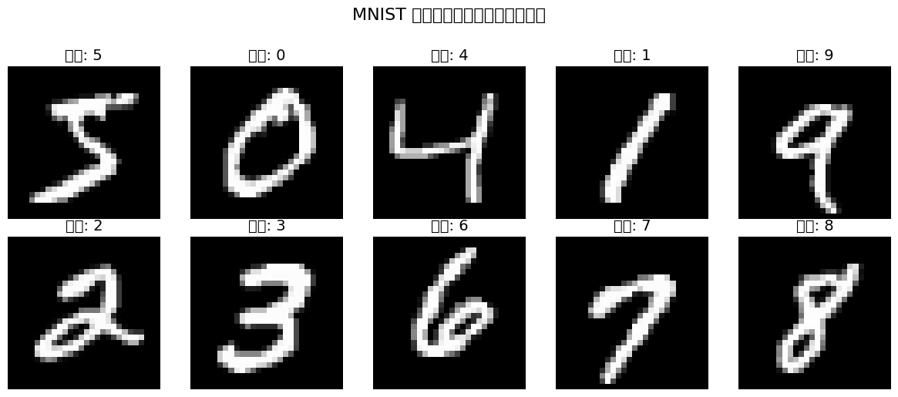
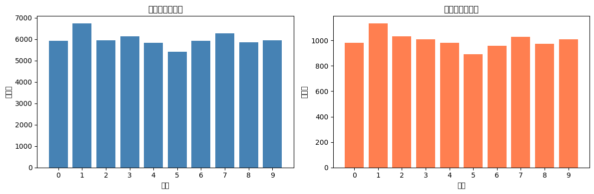
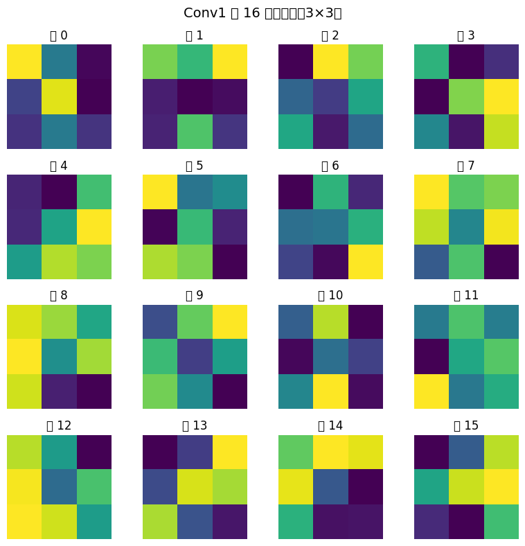
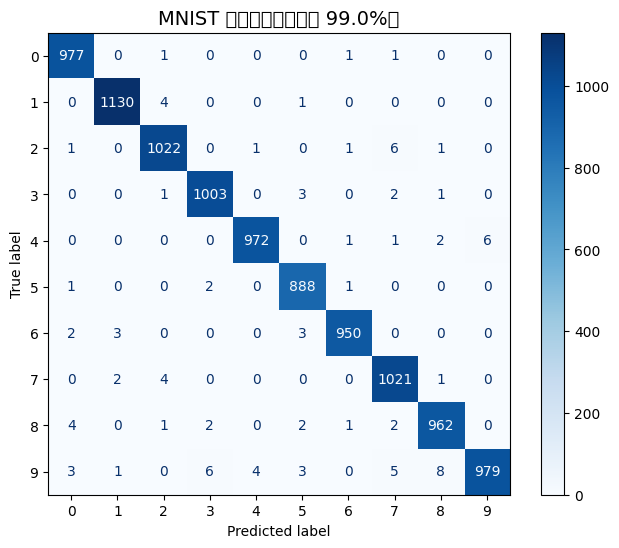
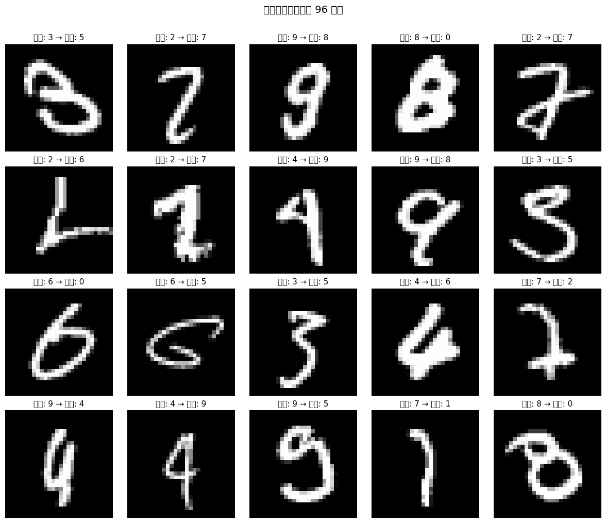
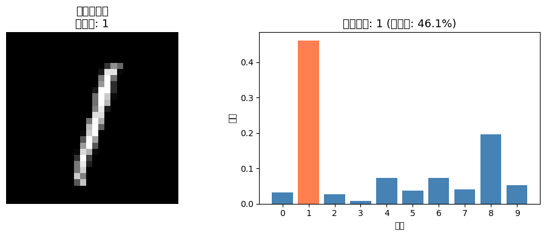
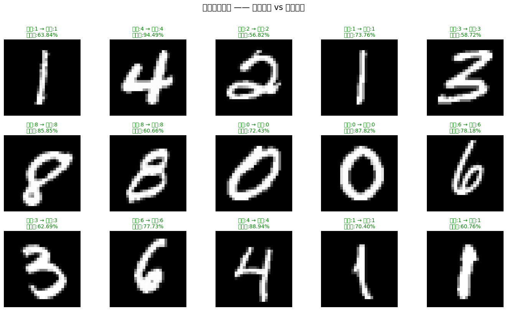

《人工智能导论》课程演示项目 — 用卷积神经网络识别手写数字 0–9
这是《人工智能导论》课程的实践项目，用 卷积神经网络 (CNN) 识别手写数字 0-9，体验从数据到部署的完整深度学习流程。
MNIST 数据集：60,000 张训练图片 + 10,000 张测试图片
2 层卷积 + 2 层全连接，约 63k 参数
5 个 epoch，测试准确率约 99%
Gradio 交互界面 + Hugging Face Spaces 托管
| 工具 | 用途 |
|---|---|
| PyTorch 2.0+ | 深度学习框架 |
| TorchVision | 数据加载与预处理 |
| Gradio 5+ | 交互式 Web 界面 |
| Hugging Face Spaces | 在线部署托管 |
| NumPy / Matplotlib | 数据处理与可视化 |
MNIST 是深度学习领域的 "Hello World" 数据集，包含 0–9 共 10 类 手写数字的灰度图像，每张 28×28 像素。
| 属性 | 值 |
|---|---|
| 训练集大小 | 60,000 张 |
| 测试集大小 | 10,000 张 |
| 图片尺寸 | 28 × 28 × 1（灰度） |
| 像素范围 | 0（黑）~ 1（白） |
| 类别数 | 10（数字 0–9） |
| 均值 / 标准差 | 0.1307 / 0.3081 |


数据集类别分布均衡，无需做特殊处理。每个数字约有 6,000 张训练图片和 1,000 张测试图片。
我们构建了一个轻量级的卷积神经网络，核心思路：卷积提取特征 → 池化降维 → 全连接分类。
| 层 | 输入 → 输出 | 参数量 | 作用 |
|---|---|---|---|
| Conv1 + ReLU + MaxPool | 1×28×28 → 16×14×14 | 160 | 提取低级特征（边缘、线段） |
| Conv2 + ReLU + MaxPool | 16×14×14 → 32×7×7 | 4,640 | 提取高级特征（笔画组合） |
| Dropout(0.25) | — | 0 | 防止过拟合 |
| FC1 + ReLU | 1,568 → 128 | 200,832 | 特征映射到隐层 |
| Dropout(0.25) | — | 0 | 再次防止过拟合 |
| FC2 | 128 → 10 | 1,290 | 输出 10 类分数 |
第一层卷积的 16 个 3×3 卷积核 — 它们在训练过程中自动学会检测笔画边缘和纹理。

| 超参数 | 值 | 说明 |
|---|---|---|
| Batch Size | 64 | 每次更新使用 64 张图片 |
| Epochs | 5 | 完整遍历训练集 5 次 |
| Learning Rate | 0.001 | Adam 优化器的学习率 |
| Loss 函数 | CrossEntropyLoss | 多分类交叉熵损失 |
| 优化器 | Adam | 自适应矩估计优化器 |
| Dropout | 0.25 | 25% 概率随机丢弃神经元 |
训练时对图片进行随机增强，等效于获得更多样化的训练数据，提升模型泛化能力：
在 10,000 张测试图片上评估模型，总体准确率达到 约 99%。

从混淆矩阵可以看出，大多数错误出现在 形状相似的数字之间（如 4↔9、3↔8、7↔1），这些即使是人类也容易看错。



在网页画板上手写数字，模型实时返回 0–9 各类别的预测概率。
直接在浏览器中手写数字，体验实时预测
免费云端部署，无需本地运行
画板输入自动缩放、居中，与训练数据格式一致
显示 Top-5 预测类别及其置信度
首次访问可能需要 30 秒从休眠中唤醒
| 知识点 | 对应文件 |
|---|---|
| CNN 基本结构（卷积 → 池化 → 全连接） | model.py |
| 数据加载与增强 | train.py |
| 训练循环（前向 → 损失 → 反向传播 → 更新） | train.py |
| 模型评估与混淆矩阵 | mnist_demo.ipynb |
| 模型部署（Web 界面） | app.py → Gradio |
更难的替代数据集，替换一行代码即可尝试
增加卷积层或通道数，观察对准确率的影响
尝试不同的学习率、batch size、dropout ratio
用 hook 查看中间特征图，理解 CNN "看到了什么"